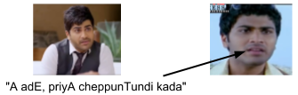
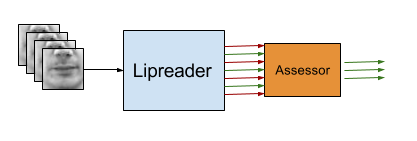

Movie Translation, Towards weakly supervised lipreading


- March 23, 2018
- Used LS3W-D to extract 3D landmarks, tried to work on changing head pose using them
- Used homography to change head pose and then detect 3D landmarks
- Initial result for Andrew Ng -> Telugu English
- March 15, 2018
- Mahesh Babu: good results from Pix2Pix on generating lips from landmarks
- March 09, 2018
- Mahesh Babu: training Pix2Pix network on 11k (noisy) Mahesh_Babu frames
- February 23, 2018
- Collected more data, clipped, detecting landmarks
- February 16, 2018
- Movie Translation: Clipping videos for dialouges, writing dialogues in ITRANS, extracting facial landmarks
- February 02, 2018
- January 19, 2018
- December 23, 2017
- December 16, 2017
- Conducted many experiments, did not improve above 70%
- Started work on Movie translation
- December 02, 2017
- Syncnet Assessor --- initial experiments
- November 24, 2017
- November 17, 2017
- November 11, 2017
- Information retrieval - Compared precision @ K and recall @ K of lipreader and assessor
- Extracting head pose from LRW
- November 04, 2017
- Information retrieval - better mAP with critic
- October 23, 2017
- Compared ROCs of Lipreader and 4 assessors, also done for lipreader trained on 10% data
- Lipreader ROC possibly not a correct way of analyzing it
- October 14, 2017
- October 06, 2017
- Zero Shot Learning results on GRIDcorpus
- Reading on failure modes
- September 28, 2017
- List of To Dos: papers, ZSL
- September 16, 2017
- September 02, 2017
- August 26, 2017
- August 24, 2017
- August 19, 2017
- Compared different word input types
- August 11, 2017
- Experiments with LSTM architectures for lipreader and critic (instead of Seq2Seq)
- August 05, 2017
- Comparison of accuracies with mean-subtraction and mouth alignment
- August 01, 2017
- July 08, 2017
- June 24, 2017
- June 17, 2017
- June 10, 2017